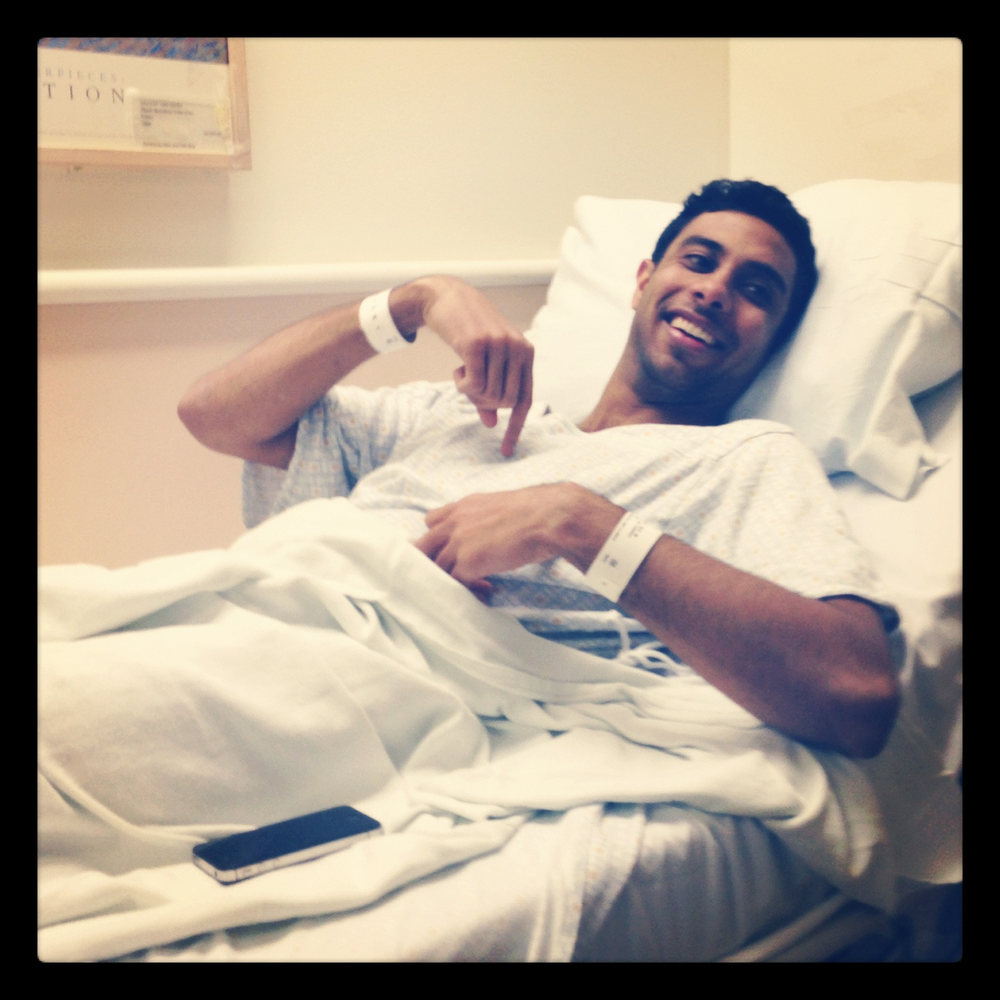
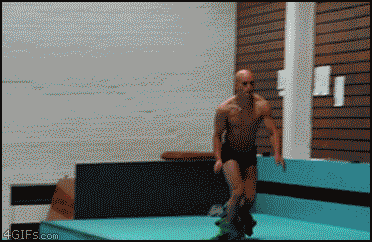
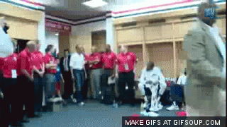
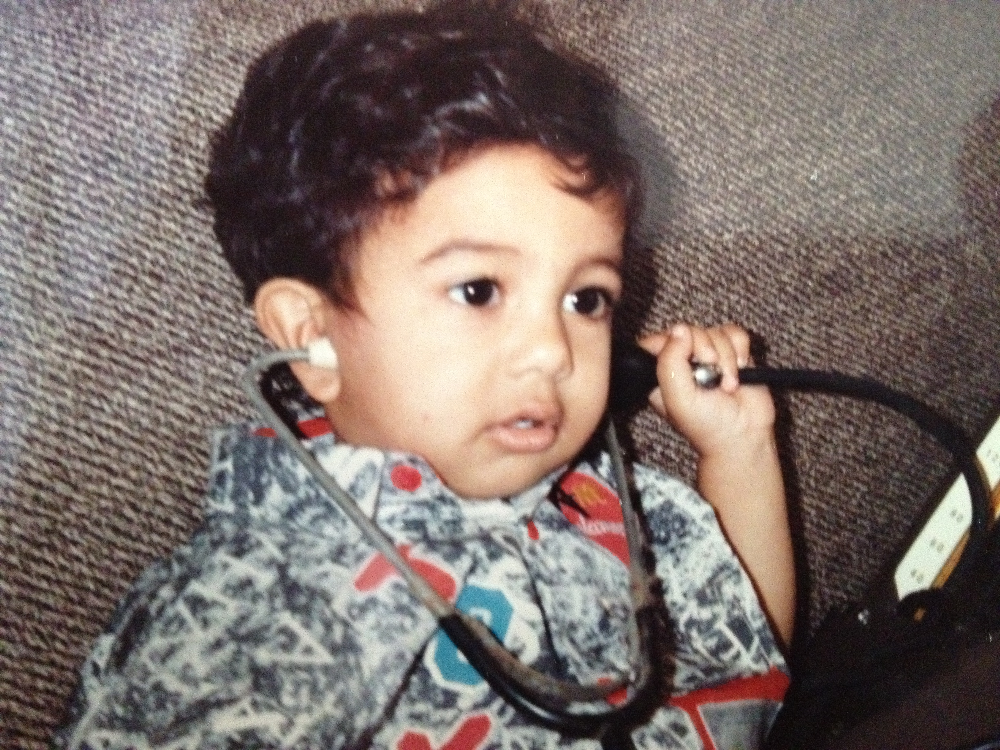
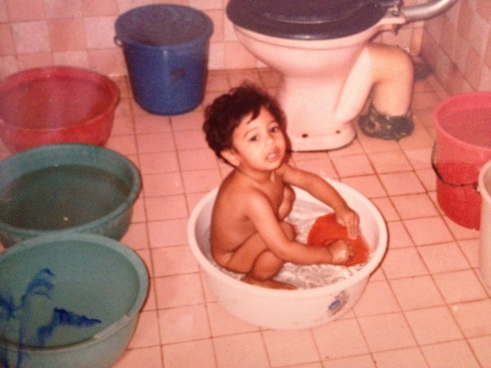
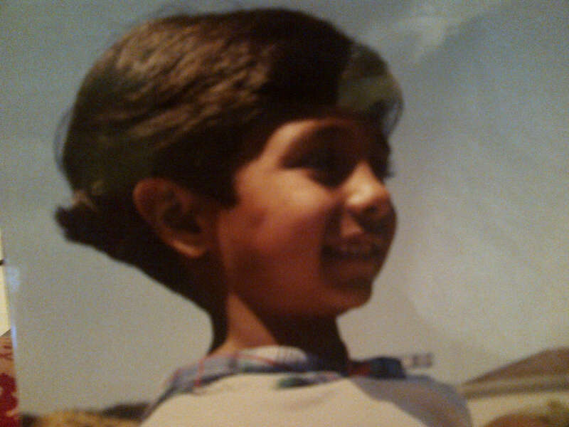

Letters from Niket Desai
Dec. 10, 2012
Dear friends,
Great news, Niket has just finished surgery and it was a great success. I have been told by his mother that it's due to the fact that he's so skinny, so I guess we can thank his diet cheese and tortillas during his Punchd days. Dude sure knows how to stay lean.
I'll be keeping in touch with his mother tonight, and will keep you all posted on when he'll be ready to be seen. Thanks again for your kind responses and let's keep channeling the good vibes!
Much love,
Michael
Dec. 10, 2012
I was Niket's prof at Cal. He is one amazing young man. When he was my student, I realized that he was of the 1% finest people. Sending him prayers. Love what all of you are doing for him. Love is all. He will be well.
- Americ
Dec. 10, 2012
Dear friends of family of Niket,
About this time now, Niket is undergoing his very serious RPLND surgery at Stanford Medical. Although the stakes are a little higher this time around, I'm happy to report that today had a great feel about it.
Niket was in great spirits: cracking smiles, making jokes and more concerned about my Instagram photo of him than anything involving knives, lymph nodes, etc.. (see below). For those of you who know his frontin' ways, he tends to exude a cool exterior at all times so as to not show any weakness. This was definitely the case during his tumor removal, where you could still visually see his fear and apprehension with it all as he maintained no outward emotion. Today, he was just in a great mood, fully understanding what he had to do to get to being a healthier friend, family member and brother to many of us.
I can only thank the many of you who have shown him such great support through this process for causing such a positive result in his happiness and outlook. There's not doubt in my mind that the love he's received from you all has given him strength, courage and the will to do what it takes to get back to being the Niket we know.
That being said, let's keep our fingers crossed and our prayers coming for the results of this surgery. Good results about the cancer growth will really lead to some great results for the future for Niket's treatments. Please keep him in your thoughts.
Lastly, I know many of you are anxious to view Niket in the hospital. Given the nature of his surgery, it's best to assume that the hospital will not be able to have any visitors for him for a few days. At this time, only family will be with him. If this changes, I'll be the first to let you know.
We should expect him to be back home come Friday this week, and he should be ready for visitors come Sunday afternoon. I'll coordinate with Matt Joanou to get that Google Docs list we created up and running. It'd be great to sign up for some times to give him your good spirits in person! Thanks again for your love and support. It means the world.
Keeping our fingers crossed for this dude!

Much love,
Mizono
Dec. 9, 2012
:)
I just read through the CC list and it's humbling to have a stunningly awesome group of people to email.
Thank you all for being such life-bad-asses. Teddy Roosevelt status.
Thank you for keeping it bright and sunny on what could be a dark road for me.
Thank you for sharing a bit of your life with/for me.
If I am lucky, I will be able to go from cancer patient to cancer survivor soon. But even if that's not the case, I am ready to do what it takes to get there.
Catch you all on the flip side.
Love,
Niket.
PS - I'm watching this and going to sleep. Two of my all-time favourites. (You've probably seen them).
Dec. 9, 2012
Good morning!
Okay, coming up on my 24 hour countdown. The fun starts tomorrow at 12:40pm at Stanford.
I am having people roll over to my place today to watch the 49ers game around 12. We'll sort out details on food, but I was thinking we'd go to cluck (chicken wings) and Amattos for a few sandwiches. Address: ........................., Cupertino, CA 95014.
For those I got to see at Ragemas, thank you for coming and I think we can agree that was pretty darn fun. For those that couldn't make it I will see you soon.
Tactically, after I go under tomorrow I may not regain consciousness until Tuesday / Wednesday. So, visitors to the hospital can start then. I'll try to get communications to you all via Michael. I should be home on the weekend making the following week (12/17) a good time to start seeing me.
Again, thank you all for your support. It's been incredibly reassuring. I talked with someone that went through the same treatment I'll be going through yesterday and feel confident I can get through all the trouble.
I'll send one more update later tonight or tomorrow morning.
Okay, now I need to pack a few weeks of stuff and get myself to the south bay.
Niket
PS - A few friends made an awesome spotify playlist for me... love to get your recommendations :) [Currently listening to That Old Pair of Jeans]
Dec. 4, 2012
Howdy everyone.
Hope the week is coming along well. I got my latest blood work back in and my cancer markers have returned to normal which means I am a 99% chance go for the RPLND scheduled on Monday (if they alternatively rose or remained at elevated states I'd start chemotherapy instead).
I'm also sperm banking tomorrow which should be interesting. The idea is to just get samples pre and post operation so that if chemo is necessary I'll have good backups.
So far my schedule remains the same, and I plan on being in the south bay tomorrow night so I can rest up for my pre-surgery physical and testing on Thursday morning. After I get the go ahead from the Urologist, Oncologist, and psychical examiner we are ready to go for Monday.
This surgery of course is quite long and serious so I don't think everyone will be able to join this time around as I most likely won't be conscious coming out of the operating room for a while. I expect to stay at Stanford for ~4-7 days depending on how I improve and then move to my place. Maybe after a week people can start rolling around; we'll just have to see how things go.
As part of that reality, it's important we make preparations. Matt has kindly offered his house (in SF) to host a RAGEMAS-Lite party where I hope to see as many of you as possible.
The details are:
What: RAGEMAS HOUSE PARTY
When: Friday December 7th 2012
Location: Matt Joanou's House
Address: .........................
Time: 8PM Onwards...
Notes: Costumes are good. Please bring items to share like Booze and Reindeer Jerky (oh, and Sake!).
I'm almost done, finally, handing off all my projects as best as I can. I've been superbly lucky to work for a company that is so flexible and caring as they have said take whatever time you need and assigned a person from HR who's helping me with the forms, life insurance, and other random things one has to sort out.
Also, I've been reading up on the many warrior pre-battle rituals of cultures past. Interestingly enough there are quite a few similarities across Native Americans, Japanese Samurai, Vikings and Roman Legions. In addition to drinking they all pretend to fight off animals so they enter battle with less fear and regard for their own well being.
Specifically, I'll point out the Bushi-Nin Sake Ritual. This was a simple step taken before a warrior or Samurai went into battle. Practiced by the Kamikaze Pilots of World War II, it required that Samurai sip sake from a cup before engaging his enemy. Has anyone played Titanic at our place before?…
I hope to see you there and I will probably provide one or two more updates before I hand the mic, err keyboard, over to Michael.
Better see you on Friday.
Niket.
PS - Apparently it's really tough to eat for a while so I'm trying to eat at all my favourite shops before Monday. Will try to pick dinner / lunch joints we can all hit up.
PPS - Yeah, this just happened. / Where can I find this gym for my post recovery rehab?

Dec. 2, 2012
Hello errbody,
I hope the weekend has been treating you well. I'm now on track to get going with the treatment. I've been pretty spotty lately so sorry if I haven't been responsive over email/text/phone. As I was saying in my last update, I am working furiously to get myself all setup with pre-operation exams and appointments and take myself out of work/life equations so I can focus on recovering over the next few months.
One shitty thing that's come up is that, due to the accelerated pace of the surgery, I will be missing my sister's graduation from Missouri. I'm going to try to get my mom or day to live stream it to me though. Ah, the wonders of technology.
With that said, this week will be a busy one as I am going in and out of the hospital for appointments, body imaging (CT / XRAY), and a host of blood tests to make sure I'm good to go for Monday. I have mapped a quick schedule here so you can see exactly how things are going down, and where I'll be.
Monday:
Location - MTV / Palo Alto / SF
Appointments - Cancer marker blood work, fertility blood work, chest CT scan, Oncologist appointment
Tuesday:
Location - SF
Appointments - Fertility specialists, laundry, a sandwich from Naked Lunch
Wednesday:
Location - MTV / Cupertino
Appointments - Fertility specialists, sampling
Thursday:
Location - MTV / Cupertino / Stanford
Appointments - Oncologist @stanford, final checks + go ahead on surgery
Friday:
Location - SF
Appointments - Last weekend house party (details in next update / keep the date [formerly was supposed to be ragemas])
Saturday:
Location - SF >> Cupertino
Appointments - Chilling and heading down to Cupertino to rest up.
Sunday:
Location - Cupertino
Appointments - Chilling, last lunch before fasting (will pick a place, everybody show up!)
Monday - Friday
Location - Stanford Hospital
Appointment - RPLND Surgery, destiny, post-op recovery.
Post
Location - Home, Cupertino
Appointment - Family, friends, pain killers.I'm still kind of figuring out / shifting attitude on the whole upcoming process. Sometimes that manifests itself in me clamming up. Other times I'll want to discuss it and you'll know because I will call you. So no need to worry about chatting about this stuff or not :) I'll tell you exactly how I'm feeling about it at the time (just like in this emails).
Thank you again for all the kind words and thoughts. Really inspiring for me. I also wanted to say I am so happy that people are getting their groove in life, whether that is (anonymous shout outs) getting into dental school, new jobs, cfa test completions, gfs & bfs, traveling, tests, and anything else. Hopefully I can add this whole situation to that wonderful list very soon.
So, I hope to see some of you tonight and more of you over the next few days & weeks.
Niket.
PS - Anytime I have an off day I just see these two things and I feel much better. (#5,16,17 crack me up).
- http://www.buzzfeed.com/daves4/people-who-are-having-a-worse-day-than-you
- http://www.youtube.com/watch?v=OQMh9F7xlko
Nov. 29, 2012
Hi Everyone,
I'm glad everyone got a kick out of Ameya. Me too. I was able to meet one of the head Urologists at Stanford today where, after some deliberation, we concluded it's best to move forward with the RPLND surgery. I've got a December 10th date with a scalpel :)
I've been spending the majority of my day trying to decouple myself from work projects and schedule a myriad of pre-op tests. It's damn exhausting and has contributed to a number of things I've learned as I navigate the world of health...
1. It's difficult to see specialists because they are busy with cases just like mine. It's amazing I was even able to get scheduled (thanks friends!. It makes me wonder about all the people coming from less privileged backgrounds (in terms of connections etc.) and how tough these situations can be for them.
2. This whole thing is an interesting process. I have roommates, friends, SOs, family, parents, bystanders, co-workers, and myself. Each group has a different way of venting, helping, and running through the motions.
3. Trying to stop life is hard. Wrapping up all the commitments you have comping up for 2 months is interesting because you want to help as much as you can, and most of the time you have no interest in letting the other person know of your condition in fear of being pitied or causing unnecessary concern. I'm also a dumb ass for going back to work and taking on a full schedule. (But they are taking great care of me and helping me transition off ASAP).
What I really need to do is treat work like this chimp treats this raccoon:

4. Friends & Family are key. (DUH). But seriously, you all rock. Please add people to this list as you see fit (or just send me the email to add). They matter to me too. There's no good way to distribute this kind of message. I definitely wouldn't be able to do this without your visits, emails, calls, texts, dinners, drinks, thoughts, and smiles. That is much more effective than chemotherapy.
Here's how I react when I get a call / text from the doctor versus getting a call / text from you (aka, white-mode activated...deactivated).

To be honest, RPLND surgery wasn't what I wanted to do. But, I can say that during this whole life speed bump I haven't felt an ounce of fear. I enjoy hanging with all of you way too much to let a surgery or cancer get in the way. So, it's going to be a bit of a skirmish, as I do open myself up to some real risk with this treatment, but I have every intention of fighting until there is nothing left in me.
I have two weekends until some serious down time so maybe we can make the most of them. I'll try to make informal plans and shoot them around. It'd be fun to catch people. I get a tad busy sometimes with all the appointments and tests but know that I do read everything you send.
Much Love,
Niket.
Nov. 29, 2012
Hey everyone,
Sorry for the delayed update. I hope all of you had an awesome Thanksgiving and were able to spend time with family, friends or just kicking it and rejuvenating yourselves.
I don't have much to offer in this update. I'm still getting opinions from different doctors on my prognosis. I'm headed into Stanford Medical Center right now. I hope I'll get a few more opinions and form a likely plan of attack moving forward.
I did get some blood tests back that showed my cancer marker levels have dropped but not as much as the doctors would hope (relative to what they've seen). I don't want to read too much into this, but the way I'd describe it is that the cancer cells are like factories. We cut out a major factory and so we expect the output to drop accordingly. Since it hasn't, it might be due to more of those factories existing somewhere or regrowth.
I'll be going in for more tests as a result on Monday again.
On a lighter note I got to meet my cousin's 1.5 year old Ameya who is super cute and smart. My cousin married a giant white dude from the north east (he played pro baseball for Boston) so I expect Ameya to, you know, get perfect SATs AND full rides for softball everywhere she applies come college-time ;)
Here's a picture of me showing her my computer. I taught her to code a little python..with some prompting she managed to type "print 'AMEYA'" which I thought was pretty neat.

Her first gifts from me were a giant purple monkey and a red google hoodie that she'll grow into over the next few months. She seemed stoked about it. She's also amazingly afraid of beards. So not only does she hate Santa Claus, but she also didn't talk to me for the first three days until I shaved. She still doesn't fully trust or talk to me. Incidentally, I encounter the same problem with women more generally.
Best,
Niket
PS - And, I'll leave you with what I found to be a funny little anecdote from my Atlanta trip: We went and had a southern food buffet on our last day before heading out. I couldn't help but notice that the entire restaurant was full of older white people (this is in Atlanta) and seemed to be a little troubled by the nine indian folks (and one huge white dude) that rolled into their otherwise chill Sunday morning. I'm not saying they thought we were terrorists, but their faces weren't exactly pleased we showed up either. I found two things pretty funny about it: 1. That of all the people in the US, they believed THEY were the target of a terrorist group. Ha. And 2. That the restaurant served fried Okra and somehow DIDN'T expect brown people to show up. Fried Okra = Indian Dream.
I'd want to fund that show Homeland to be shown on general TV stations so people realize that white people blow shit up too. Is that wishful thinking? ;)
Nov. 19, 2012
Hi :)
I'm sorry to keep everyone waiting for the status of my reports. Thank you so much for your interest..it is so, so great and sweet. I haven't been picking up my phone today as I try to process my diagnosis. There are some good parts and some bad parts which I will describe in more detail. In order for me to give you the full explanation of what is going on I will have to give you some background on Testicular Cancer so please bear with me. This will be a bit of a read, so only start if you've got a minute (or ten)!
The one good thing about this particular type of cancer is that the many directions it tends to take are well understood. So, the next steps are normally dictated by the condition and tests. Unfortunately, the plinko chips went into some shitty buckets and and it's on me to decide my treatment moving forward.
My diagnosis:
- pT2-pNX, mixed germ cell (non-seminoma) w/ levels: embryonal at 88%, Yolk Sac 10%, and Teratoma 2%
- 4.6 x 3.4 x 3.4 cm tumor extracted, along with..well the rest and some cords ;)
- Elevated cancer blood markers
- Lymph nodes show no sign of abnormality
Breakdown of diagnosis:
Most Testicular cancer you hear of tends to be "seminoma" which is a specific and singular type of cancer that is highly affected by radiation and chemo-therapy. This is why the survival rates are so good (in the 1970s, mortality rates exceed 90% if you had TC!). Unfortuantely, I am dealing with a non-seminoan type of cancer that is also highly aggressive and completely resistant to radiation therapy and resistant to chemo as well. Generally, Embryonal values over 50% are considered bad, I got an 88%. (Where the hell were the B+'s when I needed them in school?)
The other problem is the Teratoma. This is a different cancer agent which can only be defeated by surgery or taking a chance that it doesn't develop into a malignant cancer and spread. I'll speak more on this later.
The size of my tumor was quite large. I guess I like to win at games in which one should not win too :) The fact that I had such a high concentration of the aggressive cancer might explain the tumor size and why this happened so quickly.
The elevated blood markers simply show that I was dealing with cancer and we hope it drops next week after I do blood work again.
Lymph nodes show that they are normal. This however can change as we know the cancer has been lymphovascular invasion (potentially the cancer is marching on).
Okay, so what the hell does all this mean?
The ideal scenario would have been that we removed all of the cancer. Oh well. I am lucky though, and do have three options moving forward in this fight. I'll explain each in a little bit of detail:
Option 1: Surveillance
I have roughly a 50% chance that I won't see the cancer spread based on what we know currently (and can hopefully confirm with additional blood work). Surveillance means I'd just keep an eye on it for the rest of my life and hope it doesn't do something crazy and leave this all to a coin flip.
Option 2: RPLND Surgery & Chemotherapy
To address the teratoma (the cancer that isn't affected by radiation and chemo) I could choose to do a RPLND surgery followed by chemotherapy. The surgery is quite complicated as to get to my lymph nodes requires cutting open my chest and removing most major organs to gain access. There are some complications with such an intense surgery and recovery time is large. 1/5 people also become sterile… I would then follow up with chemotherapy to destroy the remaining cancerous cells. This would render me likely cured. Though, I'd have some pretty wicked scars & side effects.
Option 3: Heavy Chemotherapy
The third option is heavy chemotherapy without the surgery. I'd all be eradicate the cancer but leave a backdoor for the teratoma to potentially cause a recurrence leading me to more treatment down the line. The amount of chemotherapy would also be as much as one could take. They'd really nuke me to kill this thing so I am still learning about what that means for my life and health.
In Summary
Basically, on a scale of 1-10, where 1 is bad and 10 was good I probably am sitting in the 3-6 range of how this could have landed. I hope to take this Thanksgiving to choose what path to follow and be extra-thankful because I am certain that I wouldn't be able to do this without each of you.I have a lot of thinking to do over the next few days so I'm sorry if I don't pick up or respond to emails while I try to wrangle this in my mind. I know you are making yourselves available to help me and for that I am eternally grateful. I just want each of you to kick ass at whatever you are doing in life and to love what you do (and with whom you do it with) with all your heart.
I remain yours truly,
Niket.
PS - I took a pregnancy test over the weekend (and so did Gmac & GPeters) and tested slightly positive. Hopefully that will be the last time that ever happens.
PPS - And, since I've been playing the role of doctor, here's me playing doctor before it was cool. Le Hipstocter (or Docster) Niket.

Nov. 16, 2012
Hi Everyone,
I'm glad to report that I'm feeling much better. Was able to walk and stand starting yesterday-ish and taking less and less drugs which is a good sign.
I had my CT scans on Tuesday (I think?) and that was pretty neat. Got to go into what appeared to be a very expensive mechanical donut. They pumped me full of iodine (at this point I don't give a shit about needles anymore) which had the effect of making my whole body feel warm. Like taking a shot of whiskey, but injected into your blood stream. I highly recommend.
I will get the results of that scan, which will tell us where the cancer has spread, on Monday along with the Pathology reports on my, ahem, ball, which tells us what kind of cancer we are dealing with. Those two things will give me a roadmap for treatment beyond (chemo, radiation, more surgery etc.).
I hope the week is closing out well for everyone and you are excited about Thanks Giving. I'll be doing my best to recuperate so I can board a flight to ATL and see my folks out in the South.
Much love,
Niket
PS - I am finally clear to take a shower. Fuck, I was going to lose it. I had to sponge bath before so I've attached this photo for visual representation of that.

Nov. 13, 2012
Hi,
Thanks for all the kind thoughts and wishes. Unsurprisingly I was being impatient and bit too self confident post surgery. It hurts a little more than I let on :) [And Michael did a wonderful job conveying the scene in a much more flattering manner than I deserve].
I get my CT scans tomorrow to figure out where the cancer has spread. My pathology reports come back next monday to illuminate the type of cancer and tell us how to treat it.
Otherwise I've been at my place in Cupertino where I'm beginning to reflect a bit on all that is happening and doing my best to not get too serious about all of this. Thank you to everyone that has come visited and joined me during my bratty post-surgery performance (apparently I wanted to walk out of the hospital and go to taco bell).
And furthermore thank you for all your kind thoughts, wishes, and love you have sent my way. It has been a really strong force that I am using to keep me in good spirits. I'm going to take the next few days of down time to really think hard about some of the things I'm doing in my life because I feel both invincible and completely vulnerable.
Love,
Niket
PS - My aunt sent me this photo (that is attached) of me from long ago and the happiness I express there is the same happiness I have now thanks to all of you. A child's happiness, where the sorrows and reality of the world are momentarily suspended from our knowledge :)

Nov. 12, 2012
Hi friends,
The surgeon just came out and informed us that the surgery was a success. Niket will need 30-45 minutes before he's ready to come out, but he's doing okay. This process isn't over yet, but this is a great start.
Take care,
Michael
Nov. 12, 2012
Hi friends,
Niket has gone into surgery about 30 minutes ago. I gave him a big hug for all of us before he went in. It's about an hour long surgery and should be over shortly. We'll keep his well being in our thoughts and pray for the best.
He will be a little out of sorts post surgery so it's best to not barrage him with calls. Please send your thoughts via email and I'm sure he'll be delighted to read them when he is in better shape.
Please feel free to text me or email me at xxxxxxxxxx / mmizono@gmail.com if you have any questions or concerns.
Much love,
Michael
Nov. 9, 2012
Hi everyone,
I've added more people :)
First of all to the new peeps (and old). I love you. I kept this from you because I didn't want you to freak out unnecessarily. I was diagnosed with cancer on Wednesday.
Some of you have asked what you can do, and you've already done a lot in supporting me in life. For now just keep on rolling like you already do. I won't know the extent of my condition until after surgery and CT scans. Blood work has shown a shitty picture of what's going on, but it will be fine.
My main thing is that my parents don't worry. I've enlisted my sister and family to help me there. I'll ask one or two of you to join me at the surgery so they aren't there alone.
One of the interesting things I've had to do lately is think about stuff we normally wouldn't. I have a financial obligation, for instance, to write a Will. That was an enlightening exercise. But, it only showed me how much I have outside of anything tangible. Thank you for all your relationships and time. That will be how I get through this. Because I am well armored with your love. That, and surgery, and drugs, and a world class medical facility, and science. But you get the point ;)
At this point if it's pertinent: it's okay to tell people what's going on and that they should not worry. We'll cut out what we need to and kill the rest. That's the game plan and that's what's going to happen.
I've been given so much in life so I take this in stride. Life may give me lemons but I have vodka to mix. (can you make it a double?)
Niket
PS - Surgery is Monday. I should be coherent by Tuesday. I've been pretty drunk before so we'll see what the anesthetics can do.
Nov. 7, 2012
Hi everybody (channeling my dr. nick),
I wish I could say things are getting better but unfortunately they're going to have to get worse first. I definitely have cancer. I'm going into surgery on Monday afternoon to remove one of my testicles and the chord up to the lymph nodes. I've taken some x-rays as well as given blood to help understand any potential spread, and will have a CT scan next week too. I have a host of methods to help in post treatment. My doc said I can't lift for a few weeks, sorry Michael.
A lot of this hasn't struck me yet, but I'm okay. I'm more concerned for my parents who are probably freaking out a bit. I can't say I've been through worse, but I do like challenges.
Lots of love this time.
Niket
Nov. 6, 2012
Hi All,
I've been fairly lucky in getting out of bad situations before.
I got the results back from my ultrasound and it appears I have a large tumor in there. Next steps are to go in for immediate follow up tests to understand the extent of the growth and spread. I'll probably go under surgery in the next 6 days to cut as much of it out as possible and then get appropriate treatment from there.
I'll know more tomorrow.
Much love.
Niket
Nov. 5, 2012
Hi everyone,
I thought I'd write you so everyone can be on the same page and updated.
As some of you know (or are about to find out) I've had some growth in one my testicles. Don't freak out yet: 99% chance it's not cancer.
Normally, this type of growth is due to infection (clinically known as Epididymitis). However, initial testing (using antibiotics, some other drugs via shots, and culture samples) have ruled out the most common cases for this being infection, leading doctors to believe it's something else. They asked me if I have 'encountered significant physical trauma to the testicles lately' and I said no I haven't been kicked in the balls and I think I'd remember. (if anyone did do this while I was passed out, please do let me know).
I'm going in for ultrasounds today which will check my lymph nodes and testes (this is so awkward to write about) to see what's going on. Depending on that I'll know what's going on next.
Like I said, 99% chance this will just simply be an infection. I won't even speculate the 1% case, but begin 25 is a good age to handle any type of treatment necessary.
I'll have more later. Love you all.
Niket
PS - I really can't stress how awkward it is to be ass naked in a room full of people. It's the worst. Possibly worse than cancer.
PPS - I've not BCCed people here because I want you to all know who you are. If we could keep this between us that would be best. I suspect this is nothing more than a reaction, and all will be good.
PPPS - As a precaution, I am also taking some medications that will reduce the number of T cells in my body. I've been told I am allowed to drink though, so Cal game is still good to fucking go.